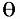

Theory of Interference
(Fabry-Perot Etalon)
1. Description
Consider light from a monochromatic point source of wavelength
 which passes through a large circular aperture (so large that diffraction effects are negligible) and is incident upon a Fabry-Perot etalon. (The role of the aperture is that it insures that only a finite cone of rays is incident upon the etalon.) The etalon is slab of dielectric material of index of refraction n and thickness d . The slab is surrounded by air. Both faces of the slab are coated with the same material and have the same reflectance, R. The light that transmits through the etalon is then incident upon an observation screen. (See any of the still pictures from this module to see the setup. The aperture is not being pictured there.) In this submodule the irradiance on the observation screen is calculated and displayed.
which passes through a large circular aperture (so large that diffraction effects are negligible) and is incident upon a Fabry-Perot etalon. (The role of the aperture is that it insures that only a finite cone of rays is incident upon the etalon.) The etalon is slab of dielectric material of index of refraction n and thickness d . The slab is surrounded by air. Both faces of the slab are coated with the same material and have the same reflectance, R. The light that transmits through the etalon is then incident upon an observation screen. (See any of the still pictures from this module to see the setup. The aperture is not being pictured there.) In this submodule the irradiance on the observation screen is calculated and displayed.
2. Calculations
Let P be a point on the observation screen and be the maximum irradiance on the observation screen. Let S denote the location of the point source and O denote the center of the observation screen. Let  be the angle between the two line segments SO and SP. If the point P lies inside the circle formed by the cone of rays determined by the aperture, then the irradiance at P is give by the formula
where F is the coefficient of finesse,
andIf P lies outside that circle, then the irradiance is zero at P.

Created by Srihari Angaluri
and Kiril Vidimce
Send comments to comments@webtop.org